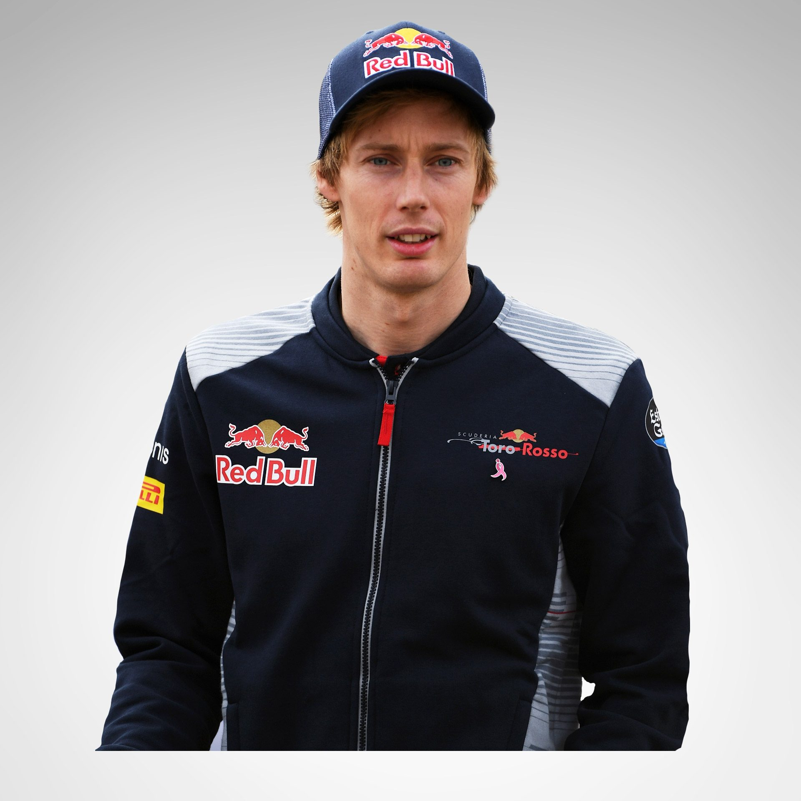

<div class="row">
  <div id="Drivers" class="container-fluid">
    <div class="col-sm-4">
	
    </div>
    <div class="col-sm-8">
      		<p style="color:red;font-size:30px;text-align:center;padding-top:20px;padding-bottom:10px;">
    FERRARI RACERS
    </p>
      <p class="text" style="color:black;font-size:18px;text-align:justify">There’s a certain irony to Brendon Hartley being given his F1 shot by Toro Rosso, given that only seven years earlier he’d been left at a career crossroads when he was dropped from Red Bull’s vaunted young driver programme.

Faced with a similar situation, many a driver might crumble or simply disappear from the racing stratosphere. But Hartley, perhaps infused with the same dogged determination that countrymen Bruce McLaren and Denny Hulme had shown when they made the same trip from New Zealand to Europe in the late 1950s, refused to give up on his racing dreams.

Instead, the then-20-year-old, who’d been picked up by Red Bull as a shaggy-haired teenager in 2006 and immediately placated young driver supremo Helmut Marko by winning the European Formula Renault 2.0 crown the following year, dusted himself down and looked at other options.

"It was tough, maybe life-changing even," said Hartley of the split that occurred in mid-2010, whilst he in the midst of dovetailing a Red Bull test and reserve role with a drive alongside Daniel Ricciardo in Formula Renault 3.5.

"I'd been with Red Bull a long time. But straight away I was thinking about what I was going to do next...”</p>
<br><br><p style="color:red;font-size:30px;text-align:right;padding-top:20px;padding-bottom:10px;">
    -Brendon Hartley
    </p>


      </div>
  </div>
</div>